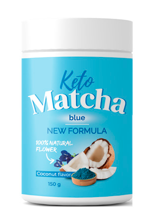

Лесен начин за отслабаване – пробив в съвременната диетология?
Последно обновяване: 12.05.2021Официалната статистика за затлъстяването в света е около 1,9 милиарда души с наднормено тегло. И тази цифра непрекъснато расте. Основната причина за бързия растеж е, че хората не знаят как правилно да отслабнат и да поддържат нормално тегло. За да отслабнат, мнозина спазват две правила: редовни изтощителни упражнения и преброяване на калориите. Не всеки може да издържи на такъв ритъм, който причинява сривове. Тялото е под стрес, което води до още напълняване.
Диетологът проф. Донка Байкова разрушава всички стереотипи в областта на отслабването и разкрива простия и ефективен начин за отслабване.

– Здравствуйте! Расскажите, почему в последнее время столько людей страдают от ожирения?
– Здравейте. Първият фактор е храненето. Важно е какво ядете и колко. За съжаление, здравословното хранене в днешно време е трудно. Рафтовете на магазините са осеяни с бърза храна, сладкиши, газирана вода и друга нездравословна храна, на която е трудно да се устои.
Има и незначителни фактори, влияещи върху затлъстяването: наследственост, начин на живот и екология. Но сега за нас е по-важно да разберем защо не можем да отслабнем, а не защо напълняваме.
– Да, наистина, защо е толкова трудно да се отслабне?
– По време на 12-годишната си практика съм виждал достатъчно примери за затлъстяване при хора под 30-годишна възраст. Всичко е свързано с метаболизма. Забавя се, мазнините се забавят много по-бързо и строгите диети само провокират активното им натрупване.
– И тук, моля, по-подробно. Искате да кажете, че диетите не помагат за отслабването?
– Не е съвсем така. Правилното и умерено хранене, разбира се, не е навредило на никого. А строгите диети обаче, които са били популярни преди 5-10 години, не носят никаква полза. Обяснявам ви сега как работи.
След като се подложи на строга диета, тялото не получава достатъчно от необходимите вещества. Мозъкът възприема това като заплаха и започва да прави запаси от мазнини за черни дни с двойна сила.
Така че, желаейки да се отървем от наднорменото тегло, напротив, ние активно го натрупваме. Ето защо е много важно правилно да се изгради диетата. Хранейки се обилно, но неправилно, тялото също не получава необходимите вещества и продължава да натрупва мазнини, а не да ги превръща в енергия.

– Възможно ли е да отслабнете, като спортувате, без да променяме начина си на хранене?
– Физическите натоварвания са много важни. Но спорта е само 20-30% от процеса по отслабване. Вие не само топите мазнини, а и усилвате мускулната маса, ако тренировките са подбрани правилно. Основната загуба на килограми е в регулираното хранене. Именно затова мнозинството не спотува, но започват активно да отслабват при промяна в начина на хранене .
– Как тогава да процедираме? Все има някакъв начин за отслабване?
– Има различни начини: операции, козметични инжекции, антицелулитни масажи и използване на скреч фолио за обвиване. Но всички те са неефективни, без да се поддържа специална диета. Следователно, работният метод за отслабване е само този, при който храната се подбира внимателно. Това трябва да включва всички витамини и минерали, от които тялото се нуждае, включително тези, които са насочени към ускоряване на метаболизма. Само в този случай се топят килограмите.
Подобна храна е трудна и скъпа. Затова препоръчвам да купувате специални натурални добавки за отслабване.
– Разкажете за някоя добавка.
– Най-ефективната добавка по мое мнение е . Тя съдържа всички необходими вещества за организма, с нея може да не мислите за правилното хранене. И главното и предимство – бързото действие, ефекта може да се наблюдава още първата седмица!

Препоръчвам на хората с различна степен на затлъстяване. Резултата от приема винаги е един – загуба на 40% от мастния слой за един курс при минимална загуба на мускулна маса. – това е истински пробив в съвременната диетология!
– Не съм чувала преди за такива добавки. Честно казано, сама не вярвам, че може толкова лесно да се отърве човек от излишните килограми.
– Това наистина е необичайно. Много хора си запазват мнението, че за да се отслабне трябва да бъдат приложени невероятни усилия. Но сега медицината направи огромна крачка и процеса по отслабване е много по-прост, отколкото преди 5 години. Моите пациенти първоначално се съмняваха, когато им препоръчвах . Но резултатите говорят сами за себе си.
– Това е страхотно. Колко може да се отслабне за месец с този метод?
– Вичко зависи от индекса на телесна маса на тялото, водния баланс, процента на мазнини, мускули и костна маса. Но мога да кажа, че средно се наблюдава отслабване с 5-10 килограма за един курс. Но има и други резултати. Ще ви дам конкретен пример. Една от моите пациентки на 28 години, висока 165 сантиметра тежеше 99 килограма.
Аз не и съставих диета и не и препоръчах да ходи на фитнес. Просто и изписах да пробва месечен курс с и помолих пациентката да си води дневник, където тя всяка седмица да фиксира резултатите си:
1 СЕДМИЦА
Подобряване на качеството на съня и повече енергия.
Направени мерки:
- гръдна обиколка: -3 см
- корем: -4 см
- бедра: -3 см
Тегло: -3 кг
2 СЕДМИЦА
Пациентката отбеляза, че чувството и за ситост е на половина спрямо обикновената и порция, която яла преди. Неконтролируемия апетит изчезнал.
Направени мерки:
- гръдна обиколка: -6 см
- корем: -8 см
- бедра: -8 см
Тегло: -6 кг
3 СЕДМИЦА
Пациентката отбелязва, че се чувства добре дори след такива продукти, които обикновено и докарват дискомфорт в стомаха: млечни продукти и бобени храни. Това значи, че процеса по нормализиране на храносмилането наистина работи и не позволява на продуктите да се застоят по стените на червата и да провокират процеси на ферментация.
Направени мерки:
- гръдна обиколка: -7 см
- корем: -11 см
- бедра: -10 см
Тегло: -12 кг
4 СЕДМИЦА
Отбелязва, че е бодра през целия ден и има повишена работоспособност. Също така анализи фиксират понижаването на нивата на глюкоза в кръвта. Към края на експеримента количеството мазнини се понижава с 9% и е в общоприетите норми – около 27%.
Направени мерки:
- гръдна обиколка: -8 см
- корем: -14 см
- бедра: -12 см
Тегло: -18 кг
Този експеримент доказа, че наистина е ефективен. Неговите активни компоненти значително подобряват храносмилането, метаболизма и въглеродния обмен. Организма с този продукт активно изгаря не само изядените калории, но и натрупаните мазнини, като преобразува мазнините в енергия. Именно затова пациентите по време на курса се радват на прилив на енергия.
– Благодаря за откровеното интервю. Мисля, че сега помогнахте на много хора и те ще могат много по-лесно да се отърват от излишните килограми. Остана ми само един въпрос: къде може да се закупи това средство?
– Продуктът вече е минал всички необходими етапи по тестирането и е получил всички съответстващи сертификати за качество. Възможно тази година ще се появи в аптеките, но засега може да се закупи само на официалния сайт на производителя. Съвета ми е да поръчвате пряко от там. Така може да сте напълно защитени от фалшификати и често има намаления.

А аз си мислех, че нямам достатъчно сила, за да се справя морално. Опитвах се да спазвам строги диети, а килограмите си бяха все толкоа. Благодаря ви, че подробно обяснихте, сега ми е ясно какво да правя.
На мен диетолог също ми изписа , пиехме го заедно с мъжа ми. Той отслабна със 17 килограма, а аз с 12. Много сме доволни от резултата и това е всичко без да сме ходили на фитнес, правим упражнения вкъщи.
Защо едни ядат и са слаби, а други се стараят да се ограничават, а не могат да променят теглото си?
Всичко зависи от метаболизма. Ако не ви е добър, то тогава ще напълнявате при всички случаи. Това средство точно помага да се ускори метаболизма, за да може организма сам да топи излишъка. Много полезен продукт.
Нямам сили да се мъча повече. Няколко пъти опитвах да спазвам диети, но на третия ден не мога повече.
За да отслабнете трябва да се трудите във фитнеса по няколко часа! Аз половин година посещавам залата и съм отслабнала с 10 кг.
На мен спешно ми трябва това средство! Диетите хич не ми помагат, а и да ги спазвам не обичам, не ми стига търпението. Най-накрая се намери нещо и за мързеливите
Диетите може би и не са най-важното, но сладкото със сигурност е излишно, ако искате да стопите мазнините, проверено е.
Всъщност от натрупаните мазнини самостоятелно е много трудно да се отърве човек, задължително трябва чужда помощ. Аз преди пиех други добавки, но от тях ефекта не беше такъв, както е с . Все пак разработката на този продукт си казва думата. На 43 години аз напълно се освободих от целулита и излишните килограми. Дори не си и помислях, че такова нещо е възможно.
Не знаете колко съм се изморила да съм дебела. Не мога по никакъв начин да премахна корема. И ръцете са ми дебели, дори не мога нормално да сложа просто тениска, когато е горещо. Винаги ми се налага да сложа нещо отгоре, за да не се вижда. Ще пробвам с този продукт.
Аз също пия , след раждането успях да отслабна с 19 кг с негова помощ.